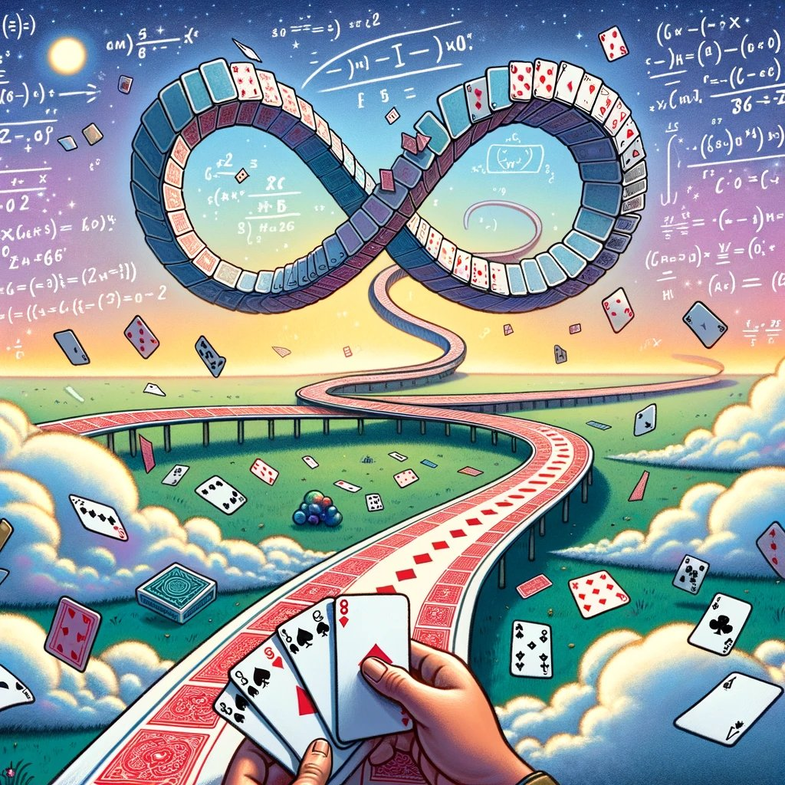
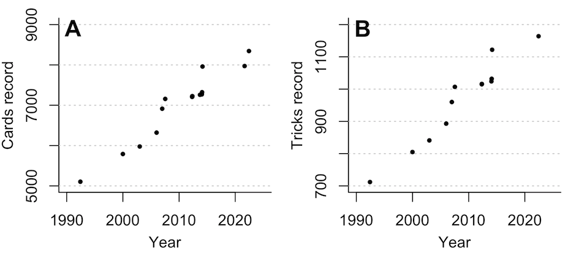

Beggar-My-Neighbour Records
The longest known games, and one that never ends
An infinite game of Beggar-My-Neighbour has been found!
Brayden Casella (10-02-2024). ∞ tricks, ∞ cards.
Game loops after 474 turns and 66 tricks.
We must know. We will know. We do know.
The paper describing the infinite game and the historical search can be found here.
Research into BMN continues with a further preprint available here.
Historical archive
Below is the historical archive of previous records for posterity.
From July 2007 to May 1 2012, I held the world record, with Nicolas Wu, for the longest ever discovered game of Beggar-My-Neighbour. Since then, Reed Nessler, Nicolas Wu, Philip Anderson and William Rucklidge have improved on the record. I've compiled a list of known current and previous records, which you can find below.
John Conway once described the search for an infinitely-looping game of Beggar-My-Neighbour as an "Anti Hilbert Problem", one that absolutely should not drive the future of mathematics.
Michael Kleber, another previous record holder, has said, 'This is almost entirely uninteresting'.
Nonetheless, the search for a longer, or even infinite game continues. Recently Sam Williams has updated me on his progress with a novel approach.
Known Historical Beggar-My-Neighbour Records
Please let me know if you believe these are inaccurate or you have discovered a new record. Test the length of games using Matt Mayer's BeggarMyPython script.
| Holder | Date | Tricks | Cards | Hands |
|---|---|---|---|---|
| Mark Manasse | 06-06-1992 | 713 | 5104 | 1. Q--J----K--K-J---Q---A---A 2. ---K-K--JA-QA--J-----Q---- |
| Michael Kleber | before 1999 | 805 | 5791 | 1. ---JQ---K-A----A-J-K---QK- 2. -J-----------AJQA----K---Q |
| Michael Kleber | c. 2002 | 841 | 5977 | 1. ----QJ-A-KK--------K--QQJ- 2. ---J---K--A-----Q-AJ-A---- |
| Michael Kleber | c. 2005 | 893 | 6321 | 1. -J--KA----A-Q--Q-A----KJ-- 2. A------QKJ--Q-------KJ---- |
| Truman Collins | 2006 | 960 | 6914 | 1. A-QK------Q----KA-----J--- 2. -JAK----A--Q----J---QJ--K- |
| Richard Mann and Nicolas Wu | 16-07-2007 | 1007 | 7157 | 1. K-KK----K-A-----JAA--Q--J- 2. ---Q---Q-J-----J------AQ-- |
| Reed Nessler | 01-05-2012 | 1015 | 7207 | 1. ----Q------A--K--A-A--QJK- 2. -Q--J--J---QK---K----JA--- |
| Reed Nessler | 04-05-2012 | 1016 | 7224 | 1. -J-------Q------A--A--QKK- 2. -A-Q--J--J---Q--AJ-K---K-- |
| Nicolas Wu & Philip Anderson (independently) | 17-05-2012 & 23-07-2013 | 1016 | 7225 | 1: --A-Q--J--J---Q--AJ-K---K- 2: -J-------Q------A--A--QKK- |
| Reed Nessler | 20-09-2013 | 1014 | 7259 | 1: ---AK-Q--J----J--QKJ-Q---- 2: ------JK-----A--K--Q---AA- |
| William Rucklidge | 17-01-2014 | 1024 | 7269 | 1. A-AQ-----Q--K--AQ-------JJ 2. -J-A-KKJ--K-----------Q--- |
| Philip Anderson | 03-02-2014 | 1032 | 7323 | 1. -AJ--QK--K----Q--J-A-KKJ-- 2. ---------JQ----------A-AQ- |
| William Rucklidge | 05-03-2014 | 1122 | 7960 | 1: -J------Q------AAA-----QQ- 2: K----JA-----------KQ-K-JJK |
| Reed Nessler | 31-08-2021 | 1106 | 7972 | 1: ----K---A--Q-A--JJA------J 2: -----KK---------A-JK-Q-Q-Q |
| Reed Nessler | 09-06-2022 | 1164 | 8344 | 1: ---AJ--Q---------QAKQJJ-QK 2: -----A----KJ-K--------A--- |
